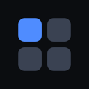

PinnedConnect the extension to your Pinned server. Create a token in the app and paste it here.
Shortcut
Alt Shift S opens the save popup. Change it in the browser's extension shortcuts page.

PinnedConnect the extension to your Pinned server. Create a token in the app and paste it here.
Alt Shift S opens the save popup. Change it in the browser's extension shortcuts page.